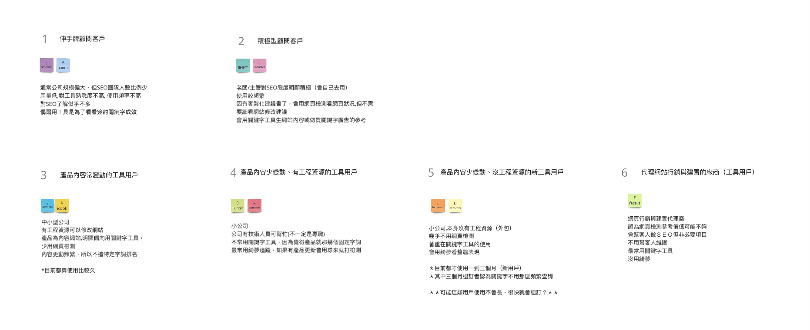
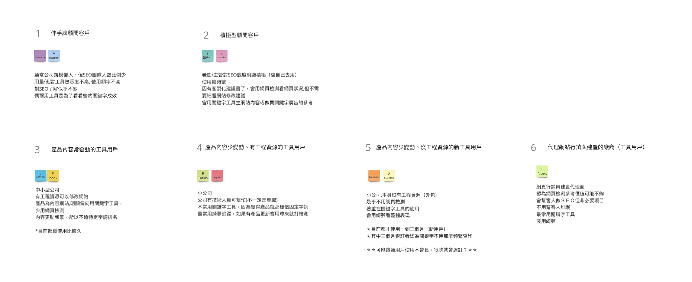

Define User Persona
Survey Design / User Interview / Strategy Proposal
Survey Design / User Interview / Strategy Proposal
According to the outcome of keyword research tool revision, we found even though users did increase after adding new features, it does not reflected improvement in retention. We can suggest—new features might not be a critical feature that attract user to keep on using, it’s probably just a nice-to have feature. Still, it’s not easy to confirm if the conclusion is correct, since the team hasn’t really done any user research before. We need to help the team know real user’s needs, and make better decision on product direction.
To find out what users really need, we need many information. Besides observing the existing user data we have, we also need to conduct survey and interview to define our user persona.
We intend to collect information from the following ways:
User Behavioral Data
The amount and frequency of usage
How long they have been using
Which functions they’ve used
Survey
What do users care about?
How do they use our product?
User Interview
Why do they need our product?
What do they think about our product?
Some insights we’ve found from data:
(1) Most paying users unsubscribe within only few months. However it takes longer time to see the result of SEO in fact.
(2) The amount of usage doesn’t seem to indicate user life time. Many long term users are even with less usage and lower frequency than short term users.
(3) Most users have tried all main functions. Among all used functions, most users use keyword esearch and webpage SEO check function more than others.
From doing survey, we can know what functions users care about, how they use it, and collect information for the user interview question design.
Target: Paying user who has been using our product for at least 1 month
Estimated time to complete: 10~12 mins
What do users care about?
How do they use our product?

To encourage users to take our survey...
Want to know how good your SEO knowledge is? Help us to fill out the questionaire! To encourage users to take our survey, we designed a small quiz in our questionaire to let users know their SEO knowledge level. Participants will get their score after compeleting the form.
*Check the reliability of survey response
Since we need to get proper interviewees from survey respondents, we have to filter out those with unreliable responses first. We did it by checking if there’s contradictory in the response, and correspond to usage data.
To really understand why they use our product, we have to figure out further more about user’s background, motivation, exact using process, and their opinion on our product.
Why do they need our product?
What do they think about our product?
Main questions:
(1) Job title/ Job Description/Team size
(2) How did you get to know our product, and what makes you start using it?
(3) What makes you decide to pay for our product? If it’s not you who made this decision, who is it?
(4) According to what you’ve answered in the survey, why do you think this function the most/least valuable to you?
(5) Please describe how often & at what situation do you use our product, and how you use it exactly. Please provide your latest experience if possible.
*Check the reliability of interview data
To make sure interviewee’s response are reliable, we have to check if their response correspond to behavior data (the amount of usage, frequency) and survey response.
List out all the information we got from every interviewees by different dimensions. We listed out all possible dimensions to categorize the information: job & company type / pricing plan &how long they've been using/ when they use our product /the way they use / information & function they care/ information & function they don't care / SEO knowledge level/ other tools they've used / personal opinions.

Categorize users by the function they care/how they use/ why they use the product, which are the most critical dimensions among all. How long they've been using our product is also an important factor when categorizing. We can see new users' behavior is different from the long term users.
 

With the persona we’ve created, we have better understand about user.
We can see almost all users need webpage SEO checking tool only when there’s webpage revision, yet it doesn’t happen frequently. Also, many users need only the keyword research function but don’t need to do tracking, while some needs tracking function more than doing keyword research.
About the revision of Keyword research tool : What to do next to improve retention?
We’ve realized the 2 main different ways to use keyword research tool from user research:
[1] Users who need new content frequently.
E.g. Content Websites, web design company, and new-built websites

Only use keyword research tool, doesn’t use keyword and landing page tracking tool. This kind of user need new content very often, what they need is to find out as more related keywords as possible. They don’t think it necessary to keep tracking on every keyword ranking on landing page.
[2] User who doesn’t update content frequently, but focus on certain keywords’ ranking.
E.g. Online Business Brochure/Catalog, some E-commerce Websites
Use keyword and landing page tracking tool often, but they hardly use keyword research tool. To this kind of user, their content doesn’t change often. They do focus on keyword research at frirt, but don’t pay much effort on keyword research anymore after using for a while. They only pay attention on the ranking on certain keywords and landing pages.
We can see, the tyep[2] user did use our keyword research function at first, but stop using after a while since their content doesn’t need so frequent changes. They leave our keyword tool and turn to tracking tool.
However, the user journey is not well connected. Even though there’re users who know how to turn to tracking tool, some user actually don’t know there’s keyword-landing-page ranking tracking function in our tool. It might be necessary to reinforce the combination between the research function and ranking tracking function. We then propose to combine research function and tracking function together to help improve user retention on our tool.
Combining keyword research tool and keyword-landing-page tracking tool may be a good proposal, but it might take a lot of efforts. Considering there’re no much resources to do it for now, we proposed another way to improve retention.
After the survey and interview, we also found many users don’t really know how to use our tool correctly. Some gave up using certain functions because they don’t know how to use them, which might be one of the reason they don’t come back and use again. Therefore, we think it important to add onboarding process to teach users how to use our tool. We proposed onboarding on product interface or onborading email design might be feasible ways to help improve user retention.